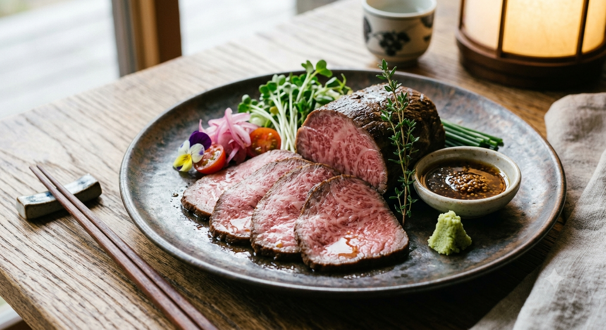
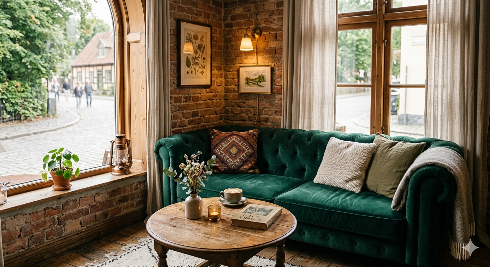
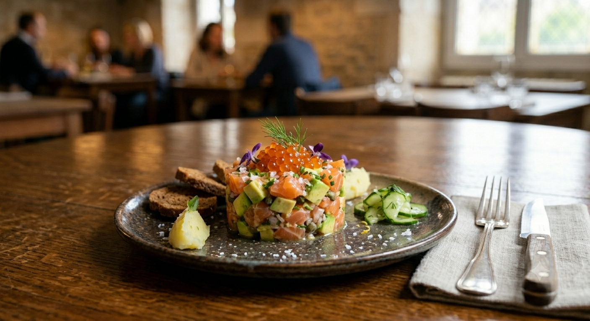

Deux Lapins
五感を揺さぶる、
Authentic French Restaurant
五感を揺さぶる、
極上ラム肉の饗宴。
1998年創業・岩沼の隠れ家
3日前までの完全予約制
Authentic French Restaurant
3日前までの完全予約制

1998年の開業以来、私たちが守り続けているのは「王道のクラシックフレンチ」。
志津川生シルバーサーモンや地元の新鮮な野菜。その素材が持つ最高の瞬間を、一滴のソース、絶妙な火入れで引き出します。
「ドゥ・ラパン（二匹のうさぎ）」はシェフとマダムの二人三脚. かしこまった高級店ではなく、友人の家に招かれたような、温かな時間をお過ごしください。

「フレンチはお腹が空く」という常識を覆すボリューム。一品一品に込めた情熱が、心も体も満たします。

吹き抜けの開放感と落ち着いた照明。ヨーロッパ風のエレガントな空間が、特別な日をさらに輝かせます。

アレルギーや量のご相談、お祝いのサプライズ。お一人おひとりに合わせた細やかな心配りを大切にしています。
「岩沼にこんな素敵なお店が！！と驚き。王道のクラシックフレンチ、このお料理がこのお値段でいただけるとは、本当に良いお店を発見出来ました。また岩沼に来た際には必ず伺います。」
— 遠方帰りのグルメなお客様「ランチといいつつ、食べ終わったのは夕方4時近く！いつの間にか時間がたっていた感じで楽しかったです。男性でもしっかりお腹いっぱいになるので、お腹を空かせて行きたいところです。」
— 記念日をお祝いされたご夫妻
3日前までのご予約で、市場から最高鮮度の食材を確保いたします。
お席には限りがございます。お早めにお電話ください。
月曜・火曜定休 / Lunch 12:00～15:30 Dinner 18:00～21:00